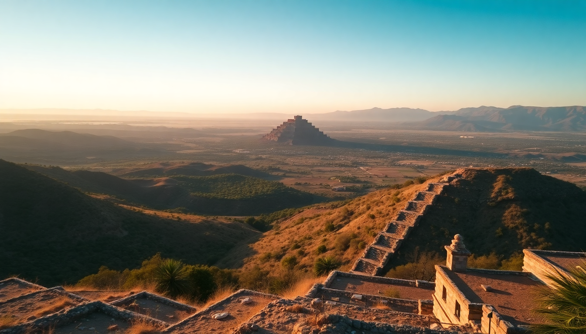

Best Day Trips from Oaxaca: Monte Albán, Hierve el Agua & Teotitlán

I spent a week based in Oaxaca City, and the three day trips that stood out most were Monte Albán, Hierve el Agua, and Teotitlán del Valle. Each is different — ruins, rock formations, and a weaving town — but they all run on similar logistics. Here’s what I learned about getting there, when to go, and what to skip.
Why visit Monte Albán, and how do you get there?
Monte Albán is the Zapotec hilltop city just 20 minutes from Oaxaca. It’s compact enough to see in two hours, but the site is genuinely impressive — wide plazas, carved stone slabs (the danzantes), and a clear view over the valleys. I went early, arriving around 8:30 AM, and had the main plaza almost to myself before the tour buses rolled in around 10.
Getting there is straightforward. I took a colectivo from the minibus stand on Calle Mina near the Mercado de la Merced — 70 pesos round-trip last I checked. The driver waits about 90 minutes at the site, which is just enough time. If you miss the return, taxis from the parking lot charge around 200-250 pesos back to town.
- Colectivo pickup: Calle Mina, near Mercado de la Merced. Leaves every 30 minutes from 7 AM.
- Admission: 95 pesos (cash only, bring small bills).
- Time needed: 2 hours is comfortable; 3 if you walk the full perimeter path.
- Bring: Water, sunscreen, a hat — there is almost zero shade.
Is Hierve el Agua worth the long drive?
Hierve el Agua is a set of petrified waterfalls — mineral deposits that look like frozen cascades. It’s beautiful in photos, but the reality is that the drive from Oaxaca takes about 1.5 hours each way on winding mountain roads, and the site itself can be crowded by 11 AM. I’d call it worth it if you go early and have a full day to spare, but not as a half-day add-on.
I booked a shared van through my hotel (350 pesos round-trip) that left at 6:30 AM and returned around 1 PM. That timing worked — I had the main viewpoint to myself until 8:30, then the tour groups arrived. The natural infinity pools at the top are safe for swimming, but the water is cold and the bottom is slippery. Watch your footing.
- Best timing: Arrive before 8:30 AM to beat crowds.
- Transport options: Shared van (300-400 pesos), rental car, or colectivo to Mitla then taxi.
- Entry fee: 50 pesos.
- Food: There’s a simple restaurant at the site; the tlayudas are fine but overpriced. Eat breakfast before you go.
- Warning: The road from the main highway to the site is unpaved and bumpy for the last 2 km.
What’s the best way to visit Teotitlán del Valle?
Teotitlán is a Zapotec weaving village about 45 minutes east of Oaxaca. It’s not a tourist trap — families have been weaving wool rugs (tapetes) here for centuries using natural dyes from cochineal, indigo, and marigold. I went because I wanted to see the process, not just buy a rug.
I took a colectivo from the Central de Abastos market (30 pesos, one way). The driver drops you at the main plaza. From there, walk a few blocks to the taller (workshop) of Teotitlán de la Sierra — they gave a free, no-pressure tour of the dyeing and weaving process. I ended up buying a small piece, but I didn’t feel hustled. If you want a rug, negotiate: cash gets a better price than card.
- Colectivo location: Central de Abastos, ask for “Teotitlán” — minibuses leave every 20 minutes.
- Time needed: 3 hours is enough for a workshop visit and a walk around the village.
- Workshop tip: Look for “taller abierto al público” signs. Familia Rojas is another reputable one.
- Lunch: Comedor Lupita on the plaza serves good mole negro with chicken for 80 pesos.
- Don’t miss: The small church at the top of the hill — the view over the valley is better than the interior.
Can you combine Monte Albán and Hierve el Agua in one day?
I tried this. I do not recommend it. Monte Albán is a morning trip, Hierve el Agua is a morning trip, and they are in opposite directions. You would need to leave Monte Albán by 9:30, get back to Oaxaca by 10:30, then drive to Hierve el Agua arriving around noon — which is exactly when the crowds peak and the light gets harsh for photos.
If you only have one day, pick one. If you have two days, do Monte Albán one morning and Hierve el Agua the next. Or, if you really want to push it, rent a car and leave Oaxaca at 6 AM, hit Hierve el Agua first (arrive 7:30), then drive to Monte Albán by 11:30. That schedule works but it’s rushed.
- Better combo: Monte Albán in the morning + Teotitlán in the afternoon (they’re on the same side of town).
- Worst combo: Hierve el Agua + Monte Albán in one day — too much driving.
What should you eat and where on these trips?
Each trip has a logical lunch stop. For Monte Albán, skip the overpriced snack stand at the entrance and head back to Oaxaca to Mercado 20 de Noviembre — the tlayudas at Doña Vale are the best I had. For Hierve el Agua, the on-site food is mediocre; I’d rather eat in the town of Mitla on the way back, at Restaurante La Sorpresa (try the chapulines — fried grasshoppers — if you’re adventurous). For Teotitlán, eat at Comedor Lupita on the plaza.
- Monte Albán lunch: Mercado 20 de Noviembre, Oaxaca.
- Hierve el Agua lunch: Restaurante La Sorpresa in Mitla.
- Teotitlán lunch: Comedor Lupita, main plaza.
When is the best time of year for these day trips?
Dry season — November through April — is the sweet spot. I went in February and had clear skies every day. Rainy season (May to October) means afternoon downpours, which can make the unpaved road to Hierve el Agua muddy and the Monte Albán stones slippery. Also, the sun is brutal at Monte Albán year-round; I saw people turning back early because they didn’t bring water.
- Best months: November, December, January, February.
- Avoid: July to September (peak rain, plus Hierve el Agua gets cloudy).
- Time of day: Start all trips by 7 AM. You’ll finish before the heat and the crowds.
FAQ
Do I need a guide for Monte Albán, or can I explore on my own?
You can absolutely explore on your own. The site is well-signed in Spanish and English, and the layout is logical. I spent two hours walking the main plaza, the ball court, and the danzantes platform without a guide and understood plenty. If you want deeper context, the onsite museum has good exhibits. That said, hiring a guide at the entrance (about 300 pesos for a small group) adds stories about the Zapotec calendar and the carving meanings that you won’t get from the signs.
Is Hierve el Agua safe for swimming?
Swimming is allowed in the two natural pools at the top, but the bottom is extremely slippery — like walking on wet marble. I saw two people slip and fall in the 20 minutes I was there. The water is cold (around 18°C / 64°F) and has no lifeguard. If you swim, wear water shoes and stay in the shallow end. The deeper pool has a slight current near the edge. I’d call it low-risk if you’re careful, but not for kids or weak swimmers.
How much cash should I bring for these trips?
A lot more than you think. Colectivos and entry fees are cash-only. For Monte Albán, bring 200 pesos per person (entry + transport). For Hierve el Agua, 500 pesos covers transport, entry, and a simple lunch. For Teotitlán, 300 pesos is enough for transport and lunch, but if you plan to buy a rug, bring 800 to 2,000 pesos in cash — card machines are unreliable in the village.
Conclusion
- Monte Albán is the easiest and most rewarding day trip — go early, take the colectivo from Calle Mina, and spend two hours walking the ruins.
- Hierve el Agua is beautiful but requires a full morning; the drive is long, and the site gets crowded by 9 AM.
- Teotitlán del Valle is the best for a low-key afternoon — watch weaving, eat mole at Comedor Lupita, and buy a rug if you want one.
- Do not try to combine Monte Albán and Hierve el Agua in one day. Do Monte Albán + Teotitlán instead.
- Bring cash, water, and sunscreen for all three trips. Start every outing by 7 AM.